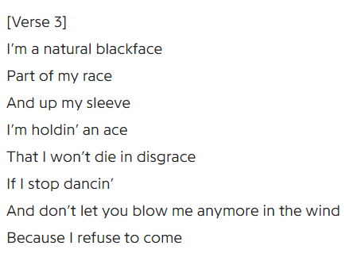
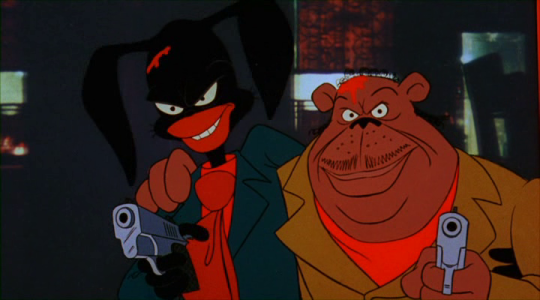

TYOMA THE BLOGGER
Hey, you're not supposed to be in here.

The Bakshi Rants
Posted October 26th, 2019Y'know, I've been doing a lot of thinking lately. Mostly about serious stuff, but forget that! I don't need to clutter up this site with my emo ramblings! That's for Twitter. But I just need to say, on a serious note? Pretty Noose by Soundgarden is a really nice song. Not like that stupid Cranberries song, Zombie right?? I don't care what anyone says or thinks about it, its trash, I hate the melody and ESPECIALLY that dumb chorus. Although the video was pretty cool. Stop cracking your voice lady!!! Anyways, Pretty Noose reminds me of what I had to go through to recover from some past trauma. It's such a nice comforting song for me :) But that's a story for another day.... stan Soundgarden.
Me and grandpa were binging some Bakshi movies the other night. Rewatched Fritz, then Nine Lives of Fritz (AN: Can I just say that Nine Lives is the better movie? Like, I know Mr. Ralph Bakshi makes jokes abt how his movie is better but I genuinely liked this one better. Not only was it a cool little send-off for Fritz, but I found lots of things to just be more.... satisfying. Sure, it was really trashy, but so was Bakshi's movie? Lots of sex and race stuff, although I honest to god believe it was handled a lot better in the sequel. New Africa was a fun little thing, showing people's convos was cool too, I especially liked the latter half of the movie since there was less plain old sex and some more.... I guess, serious thematic stuff. If you can even call it that. The ending line was so satisfying too. I love how it ended. Admittedly, Fritz's little monologue in the original about not doing his homework was really great, but it is honestly the only thing I really really liked from it. His lil far out near the end was cool too tho. Just give Nine Lives a chance PLEASE!!), then I realized he has another movie called Hey Good Lookin' and that one is pretty great too.
For the uninitiated, that one was supposed to be a darker and more realistic portrayal of the cool and great greaser culture of the 50s. Y'know, the gangs where you can't help but think of 'em in the sense that they were all just like from West Side Story where they be dancin' at each other and junk. Didn't someone die in that movie tho? Anyways, I use the phrase "cool and great" very very very lightly, since I read The Outsiders and boy is it not cool. Stay gold, indeed, Ponyboy. God that book (rather movie, since our teacher didn't feel like reading the book in class) was so sad. And it certainly isn't cool in this movie either, although I do admit I really really liked Vinnie despite him being a peehead.

Overall, I feel like this is one of Bakshi's better movies. You can definitely tell that there was a lot more budget behind this movie compared to his other works. Everything is very smoothly animated and the designs are a little less..... messy, if that makes any sense. It's cartoony, but not as super cartoony and exaggerated as it is in his 70s movies. I also liked the newer soundtrack, very 80s synth-y and an interesting change of pace from his usual funky music choices. In addition, the story was much more focused (or as focused as you can get with him) and thus, is a much nicer and cleaner introduction to Bakshi films than anything else. I also feel like the payoff of the stuff at the end was very nice, not something you get with all his movies. I was surprised it was over already, but I feel like it deserves another viewing to properly appreciate. The ending made sense, I can say that, and it was satisfying. Only thing that really irked me was how the audio would change from low quality to high quality. It's like they had been working on it for many many moons, and then all of a sudden got better mics and rerecorded random lines from throughout the movie in better quality.
Overall, here is my official ranking for the Bakshi movies I have SEEN. If there are any more I should see shout at me on my Twitter (I'm not watching the LOTR one until the time is right so don't suggest that).
- Coonskin
- Hey Good Lookin'
- Fritz the Cat
- Heavy Traffic
- Cool World
"Now tyoma," you may ask, "Why are you ranking the movie that is technically not titled after a slur but is a slur in context as number one? Isn't it an incredibly racist, embarrassing, mocking blaxploitation film written by someone who is nonblack?" And I hear you. But I'm black, so I feel like my opinion is pretty fair on this one. First off, to my knowledge, Bakshi grew up in a black neighborhood and asked around for black peoples' life experiences for inspiration on the movie. Not to mention so many cool people were involved in the movie, like Scatman Crothers, Barry White, Philip Michael Thomas (whomst I have a crush on aaaa)... Although that's enough backstory, here's my actual opinion instead of just saying "he's not racist"!
Coonskin, from mine and my 87 year old grandpa's perspectives, is a very respectful portrayal of life as.. well, black people! The Miss America segments were really funny and also on-point. Generally seeing the relationships between our characters unfold was nice. All the little non-sequiturs were so great. Also not gonna lie, I also really super duper loved the introduction song by Scatman Crothers.
Really love this part. I can't really explain why, is it the delivery? I just love it so much. Anyways, its genuinely just. A really enjoyable and wonderful movie. I feel like it appeals more to black people than anything. I understand that the minstrel artstyle is probably a turn-off but I feel like the movie wouldn't be as good without it. Despite the fact that some of the characters just look ridiculous, characters like the black woman who was talking about Malcolm are still quite compelling. I feel like it makes somewhat of a statement through contrasting an artstyle meant to mock us with emotional, human experiences. Admittedly, not a fan of the gay people portrayals, but y'know... it was the 70s and all... not an excuse but just take that into consideration. Also it is WILD how the trio (Brother Rabbit, Brother Bear, Preacher Fox) are way more respectful to women than any of the other protagonists of Bakshi movies. ESPECIALLY Brother Bear. Not just randomly fondling girls without prior consent and all that, y'know? I feel like that says a lot about the consideration put into this movie. Anyways, highly recommended! Brother Rabbit is an icon.
This was a long one. Hopefully my goofy takes were educational in some way! Just keep in mind, if you ever decide to see any of these movies, please prepare for racial violence, lots of slurs, BAD LGBT PORTRAYALS, dubious consent in sexual situations, violence/murder in general, flashing lights depending on the movie, and, well... sex. So much sex. Don't watch these movies with your kids, buddy!
I will depart now, see y'all next timeee~
tyomaFirst! haha funny
Posted October 19th, 2019Edit: Added a picture :)
Wow! Can't believe this works. Well hey fellas, here's my first blog post. I don't know how to blog really, I didn't even blog on tumblr when I was being frequent on it. Maybe I could just talk about what's been going on? Yes, good idea....
Lately I have been so busy with school! No time to even work on this website... Math was bad for a while with all the nonstop homework but NOW the true suffering is my English class! I only now finished an essay and turned it in (just barely making the word count!!).... The worst part is I have to write another one after.... and god do I not feel like it.... but at least I have a few more days of freedom, right? :') Anyways, I do have a few more math assignments to do but its just logic stuff so that's easy. Art is a challenge because we're doing life studies and I keep zoning out during class! Ah, the perils of college...
Hopefully, now that I have this page set up, I can post here a bit more. I'm also planning to start up another page for me and my buddy, so we can do music reviews! I'm thinking of attaching it to this page, but I'm not sure yet... we shall see! However, that will be the professional page. This blog is for my bad, poorly thought out reviews of random things I end up experiencing. Spoiler-free, mind you! I shall begin with my review of Danny Brown's new album, uknowwhatimsayin?....

I liked it! It was very nice. Got that classic experimental Danny Brown style, although much more upbeat and less chaotic than Atrocity Exhibition. I was genuinely surprised hearing Danny's voice after not having listened to him in a while. I am fond of his strange delivery... I almost missed it.... Danny plays the role of my uncle giving me life advice, and y'know what? I appreciate it. Some of the homies could stand to learn from his wisdom. Favorite song is probably Theme Song. Who are you beefing with Danny? Who is beefing with Danny at all?
This concludes the review. Anyways, what shall I be writing going forward? General recaps of my life, planned ideas for the site/other personal projects, reviews of stuff... and whatever else I feel like writing about! See you... in the bone zone...
tyomaBy the order of the Jarl, stop right there!

You have committed crimes against Skyrim and her people. What say you in your defense?
- How about I pay you some gold and you look the other way?
- I submit. Take me to jail.
- I'd rather die than go to prison!